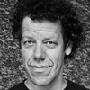

|
Gayaneh Bagdasaryan
A graduate of Moscow State University of Printing Arts, Gayaneh has designed Cyrillic localizations for most major type libraries, including Linotype, Bitstream, The Font Bureau, ITC, Berthold, Typotheque, Emigre, and ParaType. She began her type design career at ParaType in 1996 and founded Brownfox type studio in 2012. Her work has won awards from a number of international type design competitions, including Kyrillitsa’99, TDC² 2000, and Granshan 2013. Gayaneh is the mastermind behind Serebro Nabora, a prominent annual international type conference held in Russia. |
 |
Frederik Berlaen
Type designer with a love for programming and scripting. After studying graphical design at Sint Lucas in Ghent, where he got the passion for pure black & white type, he went to study typedesign at the Royal Academy of Art (KABK) in The Hague. |
 |
Erik van Blokland
Сodeveloper of Robofab and UFO. He is also working as a typedesigner, programmer and is lecturer at the TypeMedia course of the Royal Academy in The Hague. |
 |
Laurenz Brunner
Born in Zurich, lives and works in Berlin. He runs a design office, specialising in editorial design, communication design, visual identities and custom typefaces, operating internationally within a wide spectrum of the cultural domain. He is a member of the Swiss type foundry Lineto where he published Akkurat (2004) and Circular (2013). He teaches graphic design at the Gerrit Rietveld Academie in Amsterdam and has been guest critic at various leading art and design institutes including Yale University School of Art in New Haven, Werkplaats Typographie and ECAL, Lausanne. His work has been featured in numerous books and publications, including IDEA Magazine, Tokyo; AA Publications, London; Phaidon Press, London and The New York Times Magazine. He has been awarded twice with the Swiss Federal Design Award and received numerous distinctions from The Most Beautiful Swiss Books and The Best Dutch Book Designs. |
 |
Luc(as) de Groot Berlin-based Dutch type designer Luc(as) de Groot has worked with and for many well-known companies and publications. He has made custom fonts for prestigious newspapers such as Folha de S.Paulo, Le Monde, Metro and Der Spiegel in addition to creating corporate type for international companies including Sun Microsystems, Bell South, Heineken, Siemens and Miele. He designed two font families for Microsoft: the ‘monospaced’ font family Consolas, the new alternative to Courier; and Calibri, the new default typeface in MS Word. De Groot founded his own type foundry, LucasFonts, in 2000. Its aim, in a few words: to make the world a better place by designing typefaces that look good and work well under any circumstances and in many languages. Graphic designers across the planet have discovered the special qualities of Luc(as)’ fonts. They are attracted by their functionality and friendly appearance and love the enormous range of possibilities that each family offers. Many also appreciate the idiosyncrasies – a quest for extremes that has resulted in some of the narrowest, thinnest, wittiest or boldest typefaces around. |
 |
Vladimir Krichevsky
Designer, art historian and collector. Author and designer of numerous publications for graphic designers and those who are simply interested in graphic arts — sixteen books and around one hundred articles. His bibliography includes Wallpaper* magazine’s Graphic Object of the Year (2006) and the best art book in the Russian contest Art of the Book (2010). The two-volume Typography in Terms and Images was named Book of the Year in Russia (2000). Carried out research for over ten years at the Moscow Polygraphic Institute, where he took a post-graduate course. Worked as a research associate in the History and Theory of Design Department at the All-Russian Research Institute of Technical Aesthetics; taught typography at the Stroganov Academy. Co-edited graphic design magazine Da! with Elena Chernevich. Occasionally lectured at art institutes in Amsterdam, The Hague, London and Hamburg. Has organised exhibitions in Moscow, Stavropol, Amsterdam and Madrid based on his own graphic collections. Lives and works in Moscow. |
 |
Jean-Baptiste Levée
Jean-Baptiste Levée is a typeface designer from Paris, France. He runs the digital type foundry Production Type. |
| Elena Novoselova
Graduated from the Moscow State University of Printing Arts, where she attended type design workshop, completing her final type design project in 2006. She participated in Zapf Games, a student calligraphy contest, and in 2007 became a member of the judging committee. She has been working as a type designer and calligrapher at Art. Lebedev Studio since 2006 till 2011. She also teaches type design courses. Now Elena is working as a freelance typographer. She is one of Letterwork.ru participants. |
| David Jonathan Ross
Typeface designer at The Font Bureau, where he draws letters of all shapes and sizes for custom and retail typeface designs. He strives to build useful tools that challenge designers to confront the unique visual and technical demands of their text, ransacking forgotten and pigeonholed lettering styles and searching for new approaches to the same old alphabet. |
|  | Just van Rossum
Studied Graphic and Typographic Design at the Royal Academy for Fine and Applied Arts (KABK) in The Hague, The Netherlands. Van Rossum started to collaborate with Erik van Blokland under the name LetTeRror in Berlin, while working at MetaDesign, Erik Spiekermann’s design studio. After experimenting with computer programming in connection to type design, they came up with Beowolf, the first typeface with a mind of its own. It was released by FontShop in May, 1990. Some other typefaces by Van Rossum: Justlefthand, Instant Types and Advert. Currently, Van Rossum lives in Haarlem, working as an independent designer and programmer. He teaches type design and programming at KABK in The Hague. |
| Aleksandra Samulenkova
Studied art and design at the Latvian Art Academy in Riga and at Kunsthochschule Weißensee in Berlin, where she took a type design course with Luc(as) de Groot. She continued studying type and graduated at the TypeMedia master program in The Hague. Now she enjoys working at LucasFonts and can talk about type in English, German, Latvian as well as Russian. |
 |
John Hudson
Type designer and digital font development professional. In 1994, he co-founded Tiro Typeworks, a small foundry specialising in custom font solutions for multilingual computing and publishing. He has designed or collaborated on new typefaces for Arabic, Burmese, Cyrillic, Devanagari, Ethiopic, Greek, Gurmukhi, Hebrew, IPA, Javanese, Latin, Odia, Sinhalese, Telugu, Thai and other writing systems. Hudson was awarded a special prize for his contribution to Cyrillic typography and international typographic communication at the Kyrillitsa’99 competition. |